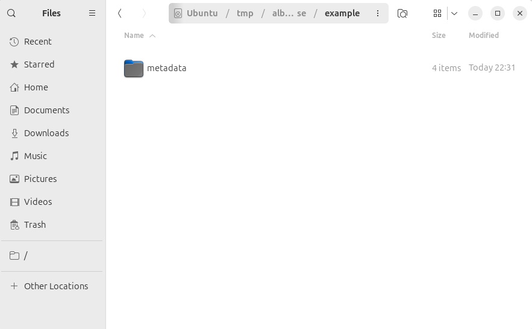
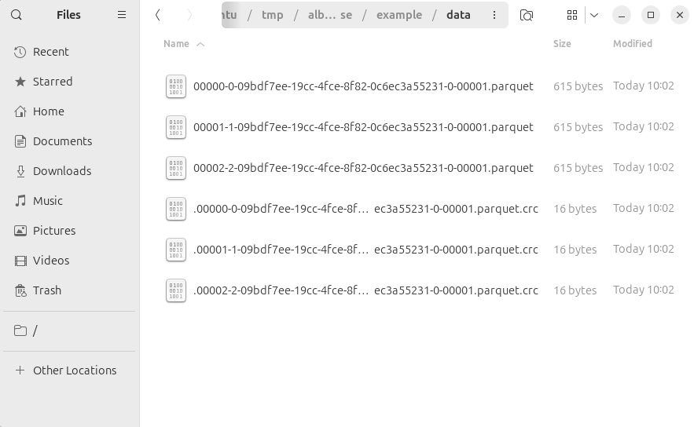
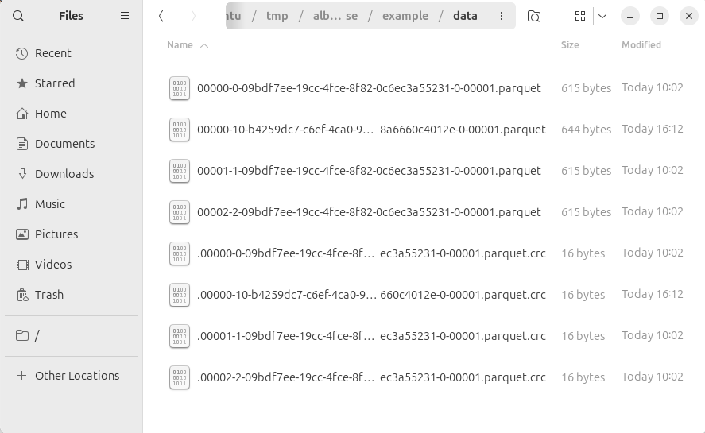
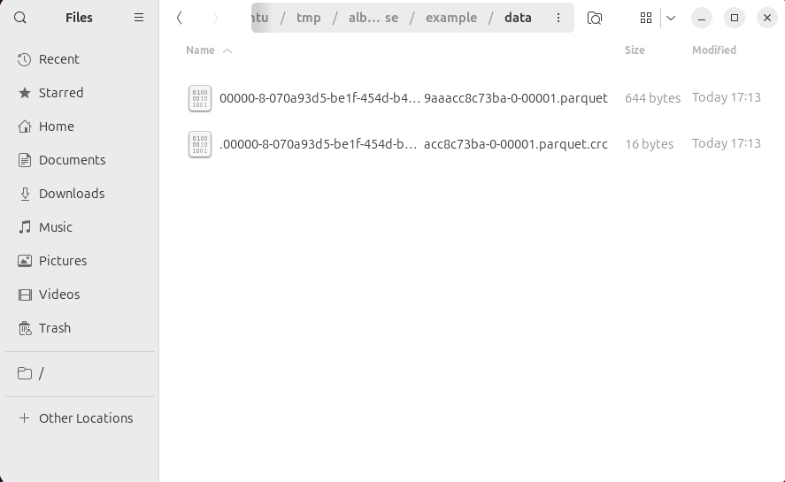

Large-scale data systems are defined not by how data is stored or rewritten, but by the contracts they expose. Apache Iceberg defines table correctness strictly at the logical plane: which rows are visible, how schemas evolve, and which invariants must hold. The physical layout of data on disk is an implementation detail, intentionally delegated to the execution engine, provided that Iceberg’s table model and write semantics are respected.
This separation is fundamental, yet easy to misinterpret when inspecting physical artifacts such as data files, snapshots, or changelogs. Differences in file rewrites, snapshot layouts, or changelog entries are often mistaken for differences in logical intent, even when the resulting table state is identical.
Under copy-on-write semantics, this confusion becomes especially pronounced. Changelog entries may diverge across logically equivalent operations, not because the table’s meaning changed, but because different physical rewrite boundaries were crossed during snapshot materialization.
This post examines a concrete case where two update sequences produce the same logical table state, yet surface different changelog entries. The analysis shows that these differences do not reflect semantic row-level change. Instead, they expose how physical execution decisions—such as file co-location and rewrite scope—leak into observability signals that are frequently treated as semantic truth.
The goal is not to document an edge case, but to clarify a boundary: Iceberg guarantees snapshot correctness, not row-level semantic diffs. Changelogs reflect physical transitions, not logical intent.
Logical meaning vs physical realization
When inspecting a table after an operation, it is tempting to interpret physical artifacts as signals of logical meaning. If two operations starting from the same initial state result in different data files, different snapshot layouts, or different changelog entries, it is easy to conclude that they must have had different logical effects on the table.
This line of reasoning collapses two distinct concerns: what the system is required to guarantee, and how it chooses to satisfy those guarantees. Execution plans, file-level diffs, and changelogs expose how an operation was carried out, not what it logically accomplished.
A separation between logical semantics and physical realization is a deliberate design choice across multiple layers of large-scale data systems.
At the compute layer, execution engines such as Apache Spark distinguish between logical plans and physical plans. A logical plan captures the semantic intent of a computation: which data is read, which transformations are applied, and what result is produced. The physical plan determines how that computation is executed, based on statistics, configuration, and runtime conditions. Different physical strategies may be chosen without affecting the computation’s semantic result.
A related but distinct separation applies at the storage layer in table formats such as Apache Iceberg. Here, the logical notion is not a computation but a table state. A snapshot defines which rows are visible at a given point in time, which schema and partitioning rules apply, and which invariants must hold. The physical realization of that snapshot consists of concrete data files, manifests, and metadata files that encode file-level references.
Copy-on-write, data files, and carry-over rows
In Iceberg, logical state is defined by snapshots. Each snapshot determines which data files are visible and therefore which rows constitute the table at a given point in time.
Data files are immutable. When an update is materialized under copy-on-write semantics, any data file containing at least one affected row must be rewritten in its entirety. Copy-on-write therefore operates at file granularity, not at row granularity.
As a consequence, rows that are logically unchanged but reside in a file that must be rewritten are physically re-materialized into a new file. Iceberg refers to such rows as carry-over rows. In the changelog, they may appear as DELETE followed by an INSERT, despite no actual logical change ocurred.
This behavior is documented and expected. However, its implications become more subtle when multiple logically equivalent operation sequences are compared.
Comparing logically equivalent sequences
We compare two update sequences that start from the same initial table state and converge to the same final logical result. From Iceberg’s perspective, both sequences are equivalent, any observed differences arise solely from how updates are physically planned and materialized.
The examples were reproduced using Apache Spark 3.5.x and Apache Iceberg 1.10.x.
We start from an empty Iceberg table, defined with copy-on-write semantics and queried through Apache Spark.
CREATE TABLE example(id INT, value STRING) USING ICEBERG;At this point, the table's logical state is trivial: no rows visible, the schema is defined, and all table invariants hold. From a physical perspective, only metadata files are present.

We now apply the same logical intent in two different ways: first inserting a set of rows, and then updating one of them while inserting additional rows.
Sequence A: INSERT INTO + MERGE INTO
INSERT INTO example VALUES (1, 'a'), (2, 'b'), (3, 'c');
SELECT * FROM example ORDER BY id;| id | value |
|---|---|
| 1 | a |
| 2 | b |
| 3 | c |
After the initial INSERT INTO, the snapshot references three immutable parquet data files produced by parallel write tasks, one per inserted row. This file-level layout is an execution detail that becomes relevant in the subsequent update.

We now apply the second logical update using a MERGE INTO operation:
MERGE INTO example t
USING (
SELECT * FROM VALUES
(1, 'd'),
(5, 'e'),
(6, 'f')
AS v(id, value)
)
ON t.id = v.id
WHEN MATCHED THEN UPDATE SET value = v.value
WHEN NOT MATCHED THEN INSERT *;
SELECT * FROM example ORDER BY id;
| id | value |
|---|---|
| 1 | d |
| 2 | b |
| 3 | c |
| 5 | e |
| 6 | f |
Logically, this operation updates the row with id = 1 and inserts two additional rows. The resulting table state contains five visible rows with the expected values.
Physically, Spark identifies the data files affected by the merge condition. Because the initial rows were distributed across three independent files, only the file containing the matching row is selected for rewrite. That file is rewritten into a new data file, while the remaining files are referenced unchanged from the previous snapshot.

At the changelog level, this execution is reflected directly. Because only a single data file is rewritten, only rows introduced or modified in the second step surface with a new change ordinal, while rows carried over from unchanged files retain their original ordinal.
Querying the changelog view after this sequence yields:
| id | value | _change_type | _change_ordinal | _commit_snapshot_id |
|---|---|---|---|---|
| 1 | d | INSERT | 1 | 6403164038722032081 |
| 2 | b | INSERT | 0 | 8146078716036017366 |
| 3 | c | INSERT | 0 | 8146078716036017366 |
| 5 | e | INSERT | 1 | 6403164038722032081 |
| 6 | f | INSERT | 1 | 6403164038722032081 |
Rows with id = 2 and id = 3, which were introduced in the initial insert and not logically modified by the merge, retain a _change_ordinal of 0. Their physical files were not rewritten and are referenced unchanged from the previous snapshot.
Sequence B: DOUBLE MERGE INTO
We now express the same logical change using two successive MERGE INTO operations. The initial rows are introduced using a merge:
MERGE INTO example t
USING (
SELECT * FROM VALUES
(1, 'a'),
(2, 'b'),
(3, 'c')
AS v(id, value)
)
ON t.id = v.id
WHEN MATCHED THEN UPDATE SET *
WHEN NOT MATCHED THEN INSERT *;
SELECT * FROM example ORDER BY id;
| id | value |
|---|---|
| 1 | a |
| 2 | b |
| 3 | c |
Logically, this state is indistinguishable from the one produced by the initial INSERT INTO in Sequence A. The same rows are visible with the same values.
Physically, the snapshot materializes all three rows into a single data file. Unlike Sequence A, the initial merge co-locates the rows under a single file boundary, producing one immutable Parquet file referenced by the snapshot. This difference in physical layout has no impact on the logical table state, but it directly affects the rewrite scope of subsequent copy-on-write operations.

We now apply the second MERGE INTO, identical to the one used in Sequence A:
MERGE INTO example t
USING (
SELECT * FROM VALUES
(1, 'd'),
(5, 'e'),
(6, 'f')
AS v(id, value)
)
ON t.id = v.id
WHEN MATCHED THEN UPDATE SET value = v.value
WHEN NOT MATCHED THEN INSERT *;
SELECT * FROM example ORDER BY id;
| id | value |
|---|---|
| 1 | d |
| 2 | b |
| 3 | c |
| 5 | e |
| 6 | f |
The logical table state remains identical to the previous sequence; however, when inspecting the derived changelog, the difference becomes apparent:
| id | value | _change_type | _change_ordinal | _commit_snapshot_id |
|---|---|---|---|---|
| 1 | d | INSERT | 1 | 7023772432058531414 |
| 2 | b | INSERT | 1 | 7023772432058531414 |
| 3 | c | INSERT | 1 | 7023772432058531414 |
| 5 | e | INSERT | 1 | 7023772432058531414 |
| 6 | f | INSERT | 1 | 7023772432058531414 |
Rows that were not logically modified (id = 2, id = 3) now appear with a new change ordinal. This does not reflect a logical change in table state, but the fact that those rows were part of a data file that had to be rewritten under copy-on-write semantics.
The difference between the two sequences is therefore not semantic, but physical. Identical logical updates lead to different file-level rewrites, and those rewrite boundaries are what ultimately surface in the changelog.
This illustrates the central point of this analysis: changelog entries are derived from snapshot materialization and file-level transitions, not from logical row-level intent.
Conclusion
The two sequences examined in this analysis converge to the same logical table state. From Iceberg’s perspective, they are equivalent: the same rows are visible, the same schema applies, and all table invariants hold. Any observed differences arise exclusively from how those updates were physically materialized under copy-on-write semantics.
The changelog does not encode logical meaning. It encodes snapshot transitions. When a data file is rewritten, all rows it contains—modified or not—cross a physical boundary and may surface as new entries. This behavior is neither accidental nor incorrect; it is a direct consequence of immutable data files and file-granular rewrites.
The critical takeaway is therefore architectural, not operational. Changelogs leak physical execution boundaries into an interface that is often consumed as semantic truth. Treating them as row-level logical diffs conflates guarantees that Iceberg does not make and was never designed to make.
Understanding this distinction is essential when building downstream systems that rely on changelog data. Correctness depends not on interpreting what changed, but on understanding what the system promises. In Iceberg, that promise is snapshot-level correctness. Everything else is an implementation detail.